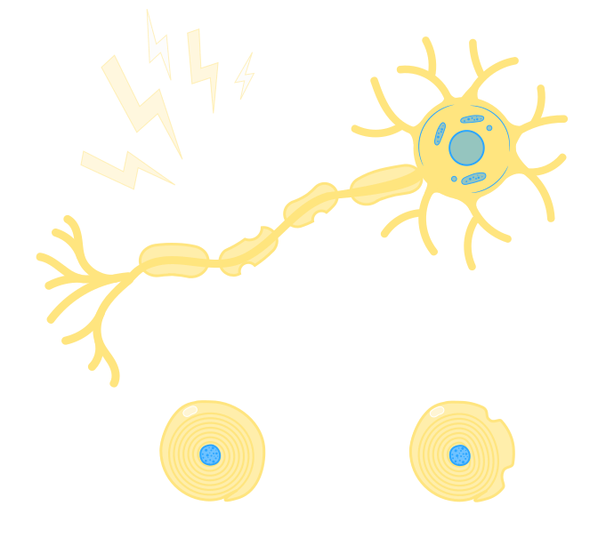
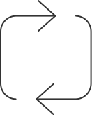
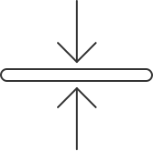
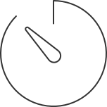
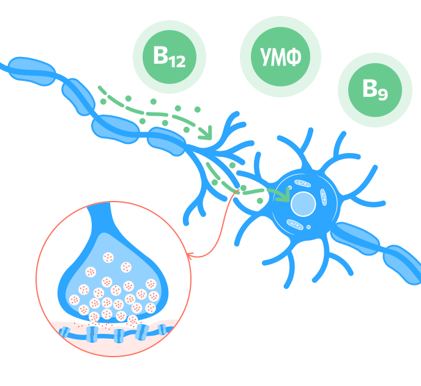
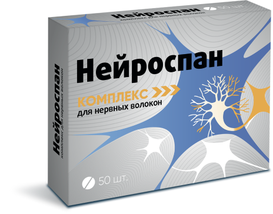
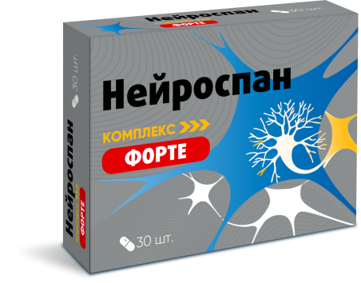
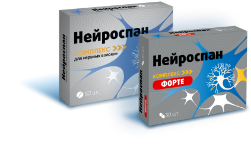
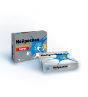

Комплекс для нервных волокон
Где купить
Нейроспан
Содержит естественные для организма компоненты,
которые стимулируют восстановление нервных волокон:
которые стимулируют восстановление нервных волокон:
Нуклеотид уридин-5-монофосфат
Витамины В12 (Цианокобаламин)
B9 (Фолиевую кислота)
Форма выпуска препарата
Нейроспан®
50 таблеток (165
мг)
Уридинмонофосфат это небольшой структурный элемент
организма, является составляющей частью РНК, он способствует
восстановлению различными направлениями.
Фолиевая кислота (Витамин B9) выступает в качестве
кофермента во множестве реакций восстановления нервных
волокон, в особенности в метаболизме белка и нуклеиновых
кислот.
Витамин B12 (Цианокобаламин) имеет важное значение для
нервной системы, так как участвует в биохимических
процессах, обеспечивающих образование миелиновой оболочки
нервов. Также витамин B12 переводит фолиевую кислоту в ее
активную форму. Он необходим для создания ДНК и РНК в каждой
клетке тела.
Нейроспан®ФОРТЕ
30 капсул (550
мг)
Уридинмонофосфат это небольшой структурный элемент
организма, является составляющей частью РНК, он способствует
восстановлению различными направлениями.
Фолиевая кислота (Витамин B9) выступает в качестве
кофермента во множестве реакций восстановления нервных
волокон, в особенности в метаболизме белка и нуклеиновых
кислот.
Витамин B12 (Цианокобаламин) имеет важное значение для
нервной системы, так как участвует в биохимических
процессах, обеспечивающих образование миелиновой оболочки
нервов. Также витамин B12 переводит фолиевую кислоту в ее
активную форму. Он необходим для создания ДНК и РНК в каждой
клетке тела.
Холина битартрат (Витамин В4) является предшественником
одного из главных медиаторов центральной нервной системы –
ацетилхолина, отвечающего за многие функции головного мозга
(управление движением, мыслительный процесс, сон, память и
т.д.). Входит в состав главного компонента мембран нервных
клеток – фосфатидилхолина, дефицит которого приводит к
когнитивным нарушениям и деменции. Выступает в качестве
кофермента во множестве реакций восстановления нервных
волокон, в особенности в метаболизме белка и нуклеиновых
кислот.
Витамин B1 (Тиамин) тиамин, находящийся в мембранах нервных
клеток, оказывает влияние на процессы восстановления нервных
клеток, регулирует проведение сигналов по нервным волокнам,
а также участвует в обеспечении энергетических процессов в
нервных клетках.
Витамин B6 (Пиридоксин) участвует в метаболизме белков
нервной ткани. Он способствует выработке энергии в
организме, а также обладает антиоксидантным действием.
Механизм действия
Как появляется боль?
Боль появляется в следствии
поврежденных волокон периферических нервов. Периферическая нервная
система пронизывает всё наше тело. Она состоит из нервных волокон.
Жжение, онемение, покалывание, внезапные «прострелы» – частые проявления боли. Зачастую боль может ощущаться не там, где скрыта причина и отдаваться в других частях тела.
Жжение, онемение, покалывание, внезапные «прострелы» – частые проявления боли. Зачастую боль может ощущаться не там, где скрыта причина и отдаваться в других частях тела.
Повреждение нервного волокна
Одна из причин неприятных ощущений и боли в теле — повреждение
периферических нервных волокон, в
частности миелиновой оболочки. Миелиновая оболочка – наиболее уязвимая часть периферического нерва.
Миелиновая оболочка покрывает нервное волокно на протяжении всей длины. Повреждение оболочки в одном месте влияет на весь нерв, так как обнажается центральная часть нервной клетки и начинают посылаться спонтанные болевые сигналы в мозг.
частности миелиновой оболочки. Миелиновая оболочка – наиболее уязвимая часть периферического нерва.
Миелиновая оболочка покрывает нервное волокно на протяжении всей длины. Повреждение оболочки в одном месте влияет на весь нерв, так как обнажается центральная часть нервной клетки и начинают посылаться спонтанные болевые сигналы в мозг.

Основные причины повреждения периферических нервов

Длительное нарушение обмена веществ

Защемление нервов, в том числе из-за травм

Малоподвижный образ жизни
Воспалительные процессы в организме
Действие компонентов
Нейроспан® включает комплекс
витаминов группы B (витамин B12 и
В9) с уридинмонофосфатом (УМФ),
который играют ключевую роль в процессе регенерации
поврежденного нерва, включаясь в обмен веществ нервной клетки.
Комбинация эти компонентов действует направлено на повреждённые структуры нервов, помогает справиться с воспалением и болью.
Комбинация эти компонентов действует направлено на повреждённые структуры нервов, помогает справиться с воспалением и болью.

Компоненты Нейроспан® способствуют:
01
Регенерации
Восстановлению нервного волокна — регенерация поврежденных
миелиновых оболочек нервов
02
Транспорту веществ
Поступлению достаточного количества строительных элементов и
ферментов к поврежденным нервам
03
Синергии
Компоненты взаимно усиливают действие друг друга
04
Профилактике
Профилактике дальнейшего повреждения периферических нервных
волокон
Показания к применению
Противопоказания:
Индивидуальная непереносимость, беременность, кормление грудью
Перед применением рекомендуется проконсультироваться с врачом
В качестве биологически активной добавки к пище – дополнительного
источника витаминов В1, В6, В12 и фолиевой кислоты, источника
холина, содержащей натриевую соль уридинмонофосфата.
Противопоказания:
Индивидуальная непереносимость, беременность, кормление грудью
Перед применением рекомендуется проконсультироваться с врачом
Способ применения

Нейроспан®
Взрослым по 1-2 таблетки в день, запивая достаточным количеством
воды
Продолжительность приема — 1 месяц
При необходимости прием можно повторить

Нейроспан®Форте
Взрослым по 2 капсулы в день, запивая достаточным количеством
воды
Продолжительность приема — 1 месяц
При необходимости прием можно повторить
Статьи о препарате
Лекции о препарате


Нейроспан®—
это жизнь без боли!
это жизнь без боли!